-
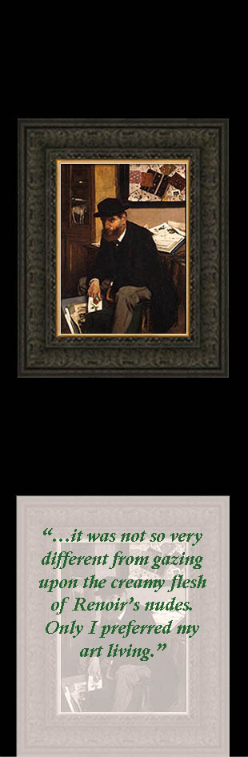
I. "The Collector"
~ Edgar Degas, 1866 ~
-
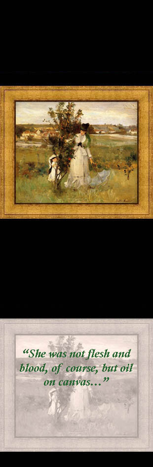
II. "Hide and Seek"
~ Berthe Morisot, 1873 ~
-
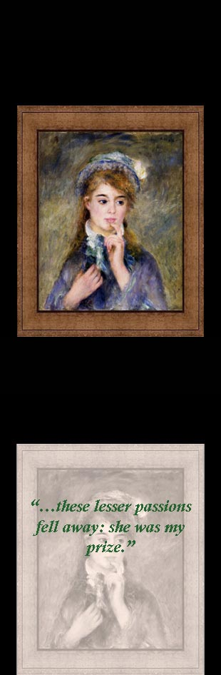
III. "The Ingénue"
~ Pierre-Auguste Renoir, 1877 ~
-
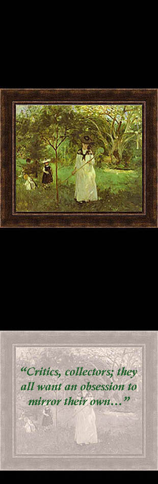
IV. "Chasing Butterflies"
~ Berthe Morisot, 1874 ~
-
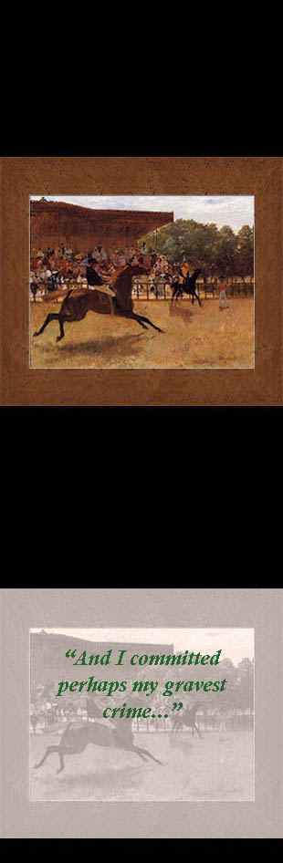
V. "The False Start"
~ Edgar Degas, 1869-70 ~
-
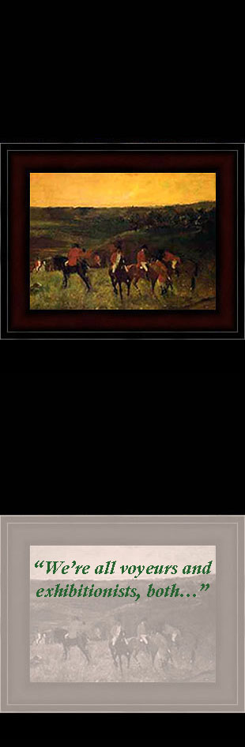
VI. "The Start of the Hunt"
~ Edgar Degas, 1863-65 ~
-
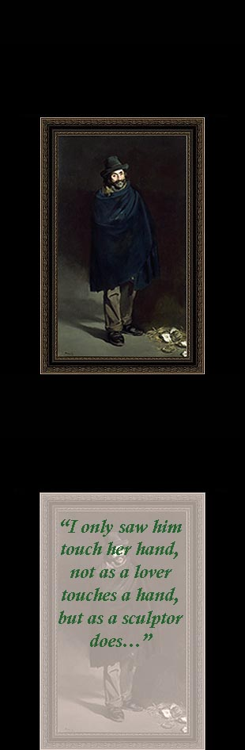
VII. "The Philosopher"
~ Édouard Manet, 1865 ~
-
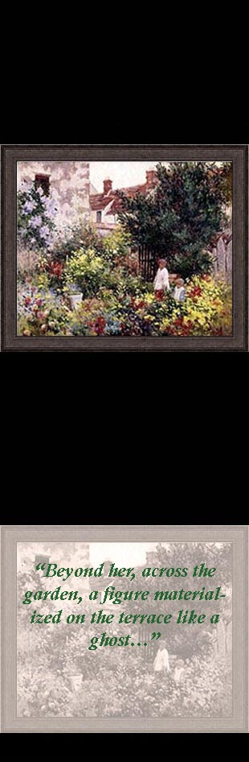
VIII. "In the Garden"
~ Camille Pissarro, date unknown ~
-
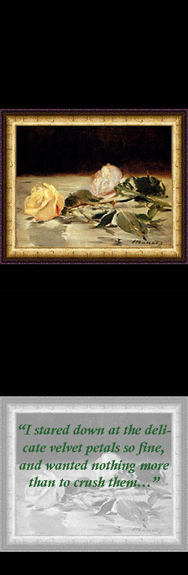
IX. "Two Roses on a Tablecloth"
~ Édouard Manet, 1882-83 ~
-
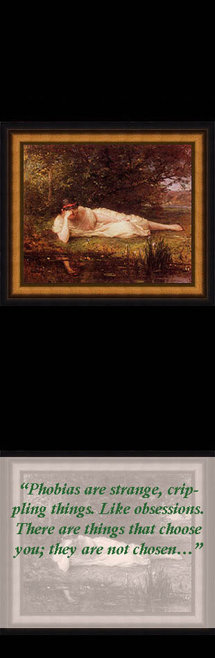
X. "The Water's Edge"
~ Berthe Morisot, 1864 ~
-
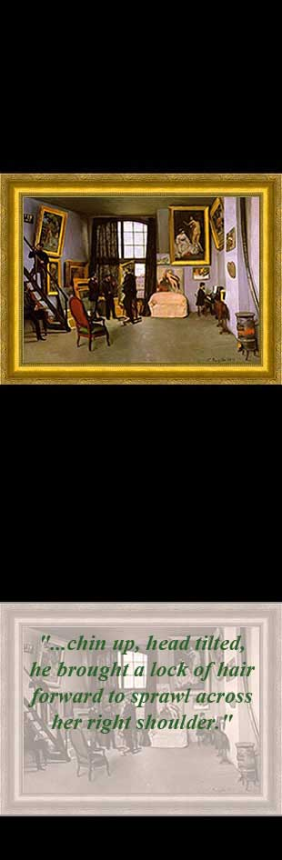
XI. "The Artist's Studio"
~ Jean-Frédéric Bazille, 1870 ~
-
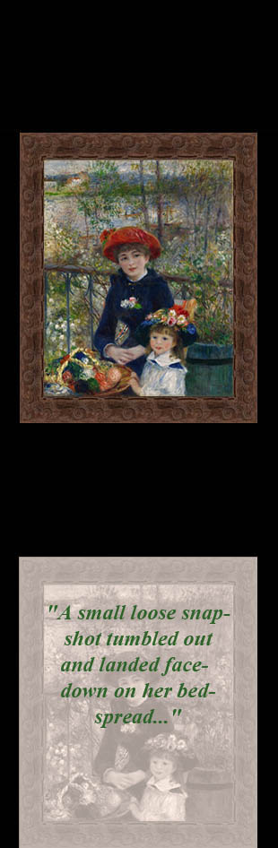
XII. "Two Sisters"
~ Pierre-Auguste Renoir, 1881 ~
-
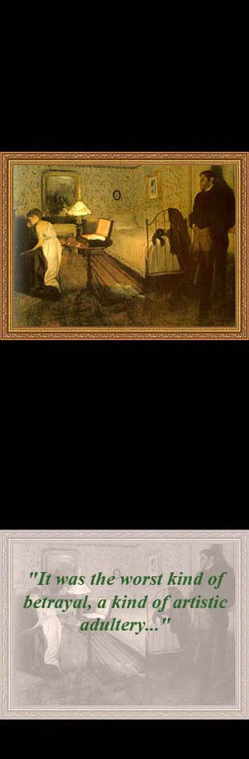
XIII. "The Rape"
~ Edgar Degas, 1868-69 ~
-
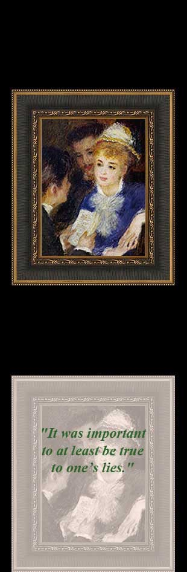
XIV. "Reading the Part"
~ Pierre-Auguste Renoir, 1874-76 ~
-
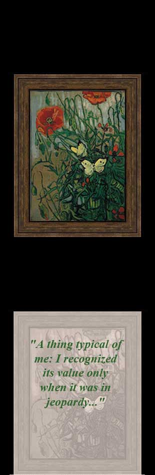
XV. "Butterflies and Poppies"
~ Vincent van Gogh, 1890 ~
-
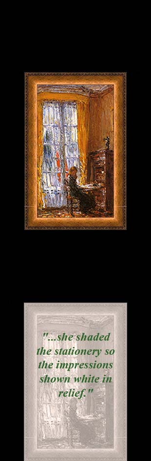
XVI. "At the Writing Desk"
~ Frederick Childe Hassam, 1910 ~
-
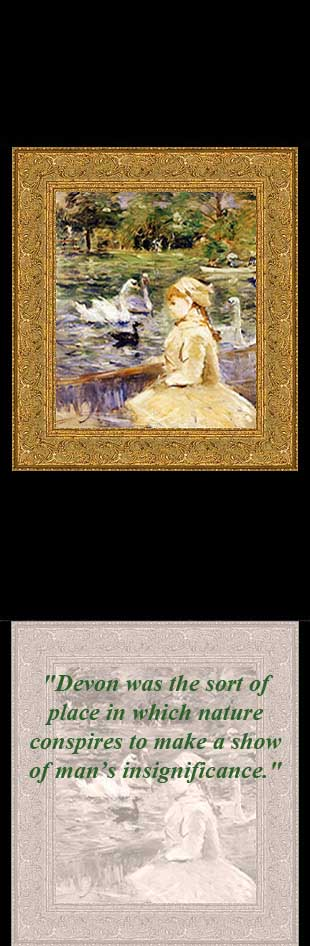
XVII. "On the Lake"
~ Berthe Morisot, 1884 ~
-
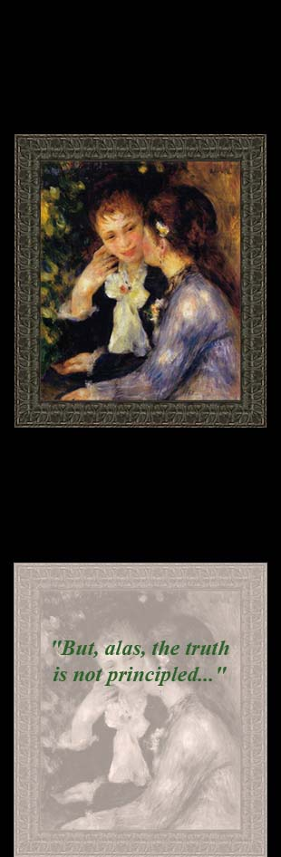
XVIII. "Confidences"
~ Pierre-Auguste Renoir, 1878 ~
-
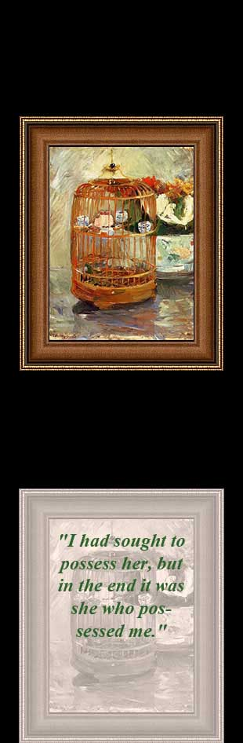
XIX. "The Cage"
~ Berthe Morisot, 1885 ~
-
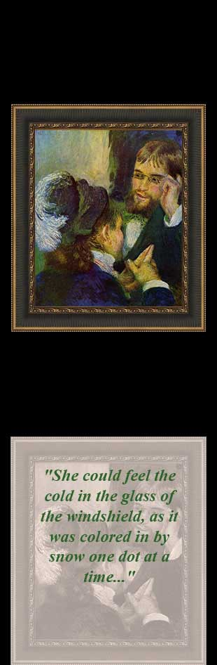
XX. "Conversation"
~ Pierre-Auguste Renoir, 1879 ~
-
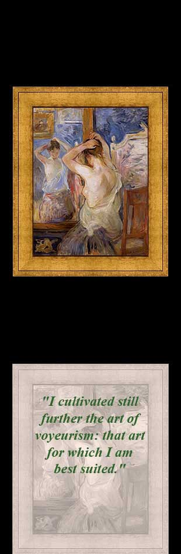
XXI. "Before the Mirror"
~ Berthe Morisot, 1890 ~
-
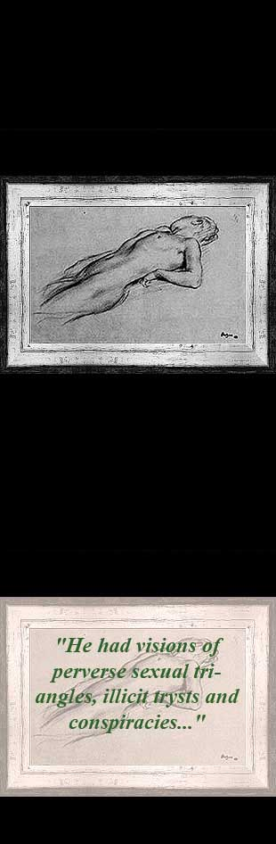
XXII. "Lying Nude"
~ Edgar Degas, date unknown ~
-
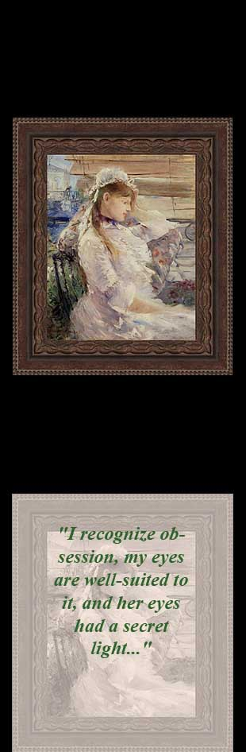
XXIII. "Behind the Blinds"
~ Berthe Morisot, 1879 ~
-
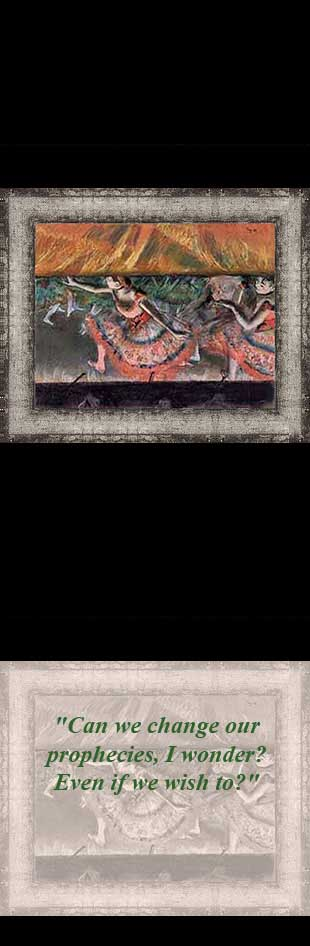
XXIV. "Lowering the Curtain"
~ Edgar Degas, 1880 ~
-
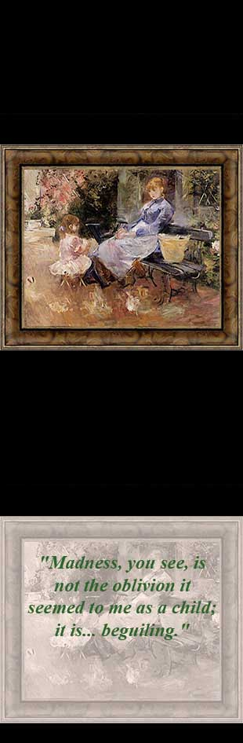
XXV. "The Fable"
~ Berthe Morisot, 1883 ~
-
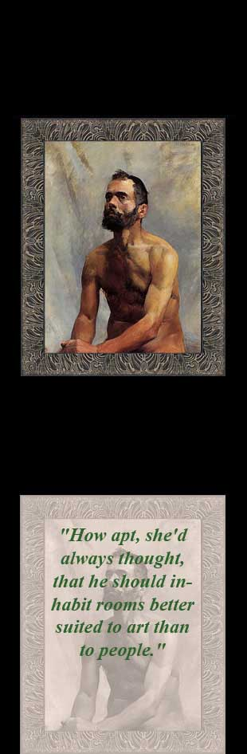
Epilogue: "Academic Study"
Nude) Henri de Toulouse-Lautrec, 1883